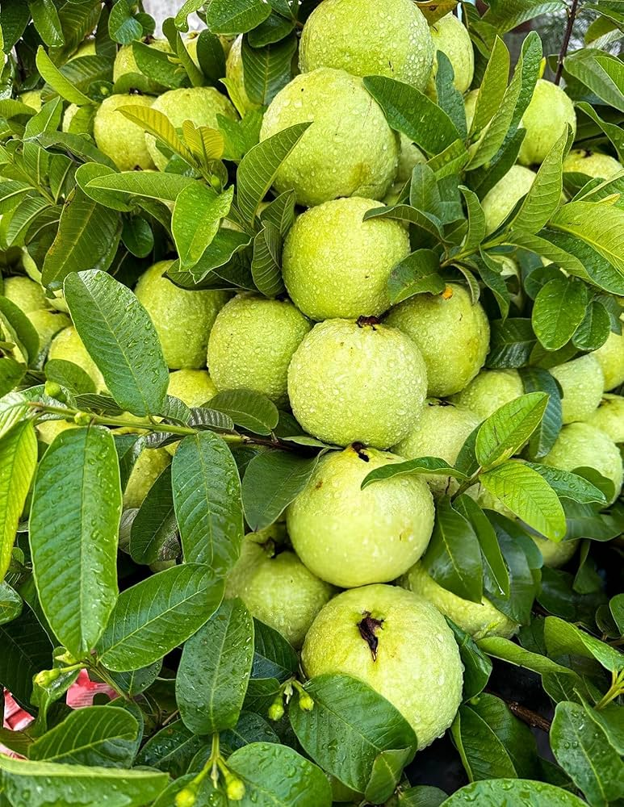

Guava
Botanical Name: Psidium guajava
Family: Myrtaceae
Native Region: Central America
Significance: Rich in Vitamin C and fiber, antioxidant-rich fruit.
Uses: Juices, jams, fresh eating.
BREIF ☰
×
The Guava tree, scientifically known as Psidium guajava, is a tropical fruit tree celebrated for its delicious fruit, medicinal properties, and ecological benefits. Originating from Central America, this evergreen tree has spread to tropical and subtropical regions worldwide, where it thrives in diverse climates and soil conditions.
Guava leaves, bark, and fruit are valued in traditional medicine for their therapeutic properties. Extracts from Guava leaves are used to prepare herbal teas, tinctures, and supplements that are believed to have antimicrobial, anti-inflammatory, and anti-diabetic effects. Guava is also used to alleviate digestive disorders, treat wounds, and lower blood sugar levels.
Guava trees play a vital role in supporting biodiversity and ecosystem health in their native habitats. The dense foliage provides habitat and food for birds, insects, and small mammals, while the tree's root system helps prevent soil erosion and improve soil fertility.